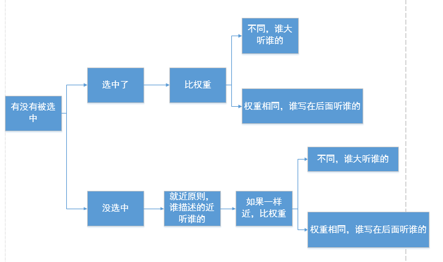

石婉茹
我的名字：石婉茹
QQ:2829339528
wechat:ww28052
敢问路在何方&&路在脚下
95后/本科在读/轻生活/轻梦想
石婉茹
我的名字：石婉茹
QQ:2829339528
wechat:ww28052
敢问路在何方&&路在脚下
95后/本科在读/轻生活/轻梦想
标签 类 id
ps:尽可能的用class，除非极特殊的情况可以用id。原因：id是js用的。即js要通过id属性得到标签，所以css层面尽量不用id，否则js别扭。另一层面，会认为一个有id的元素，有动态效果。
css高级选择器
后代选择器 空格就表示后代 .div1 p就是.div1的后代所有的p
交集选择器 交集选择器没有空格 h3.special必须是h3标签，然后必须是special标签。交集选择器可以连续交，一般以标签名开始
并集选择器（分组选择器） 逗号分隔
通配符* *表示所有元素
儿子选择器 > ie7开始兼容
兄弟选择器 + 选择紧接在另一元素后的元素，且二者有相同父元素 ie7开始兼容
序选择器 :first-clid :last-child :nth-child(2n+1) :nth(2n+2) ie8开始兼容
标签 id class 交集 后代 并集 通配符
儿子> 兄弟+
序选择器:first-clid :last-child :nth-child(2n+1) :nth(2n+2)
color、 text-开头的、line-开头的、font-开头的,这些关于文字样式的，都能够继承； 所有关于盒子的、定位的、布局的属性都不能继承。
层叠性：就是css处理冲突的能力。 所有的权重计算，没有任何兼容问题！
当选择器，选择上了某个元素的时候，要统计权重（id的数量，类的数量，标签的数量），以权重大的为准
不进位，实际上能进位（奇淫知识点：255个标签，等于1个类名）但是没有实战意义！
如果权重一样，那么以后出现的为准
如果不能直接选中某个元素，通过继承性影响的话，那么权重是0
如果大家都是0，那么有一个就近原则：谁描述的近，听谁的
1>先看有没有选中，如果选中了，那么以（id数，类数，标签数）来计权重。谁大听谁的。如果都一样，以后写的为准。
2>如果没有选中，那么权重是0。如果大家都是0，就近原则。
同一个标签，携带多个类名，有冲突时，与标签中书写类名顺序无关，与css中样式的顺序有关
<p class="spec1 spec2">红色</p>
<p class="spec2 spec1">红色</p>
.spec2{color:blue;} .spec1{color:red;}
!important
可以通过语法 属性:属性值 !important;来给一个属性提高权重。这个属性的权重就是无穷大。
!important提升的是一个属性，而不是一个选择器
!important无法提升继承的权重，该是0还是0
!important不影响就近原则 如果都是继承来的，应该按照“就近原则”，important不影响就近原则。远的，永远是远的。不能给远的写一个important，干掉近的。
注意!important的性质
